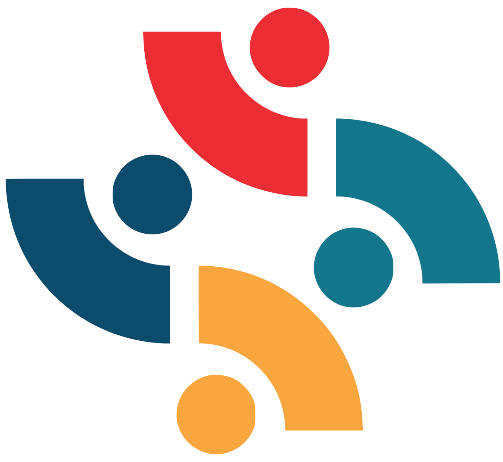
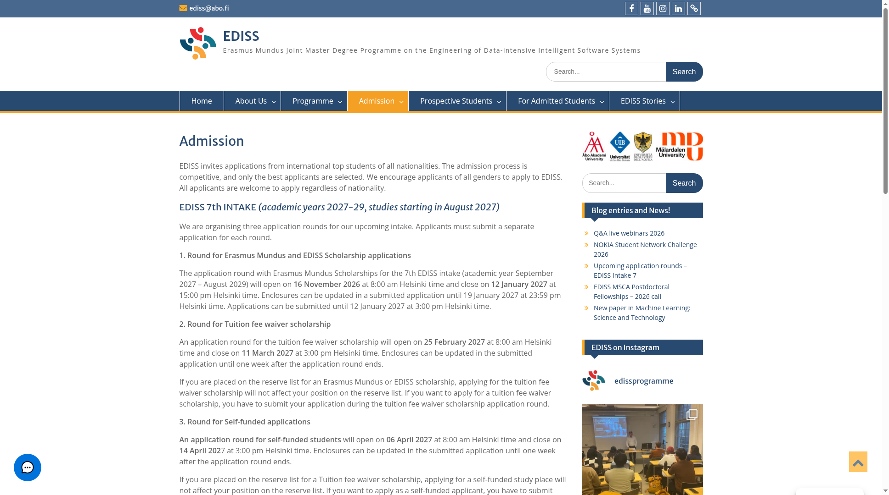
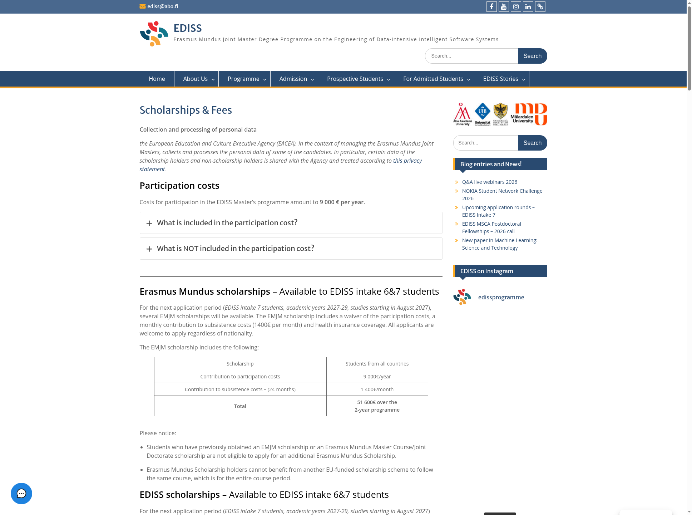
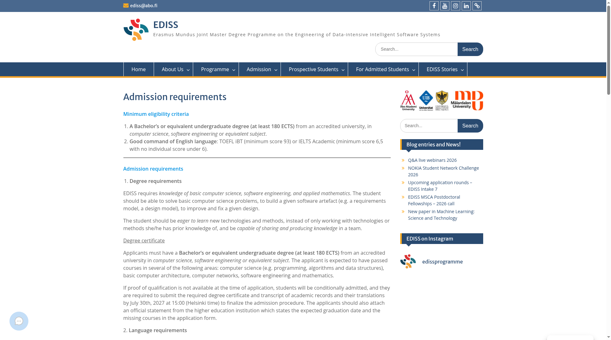
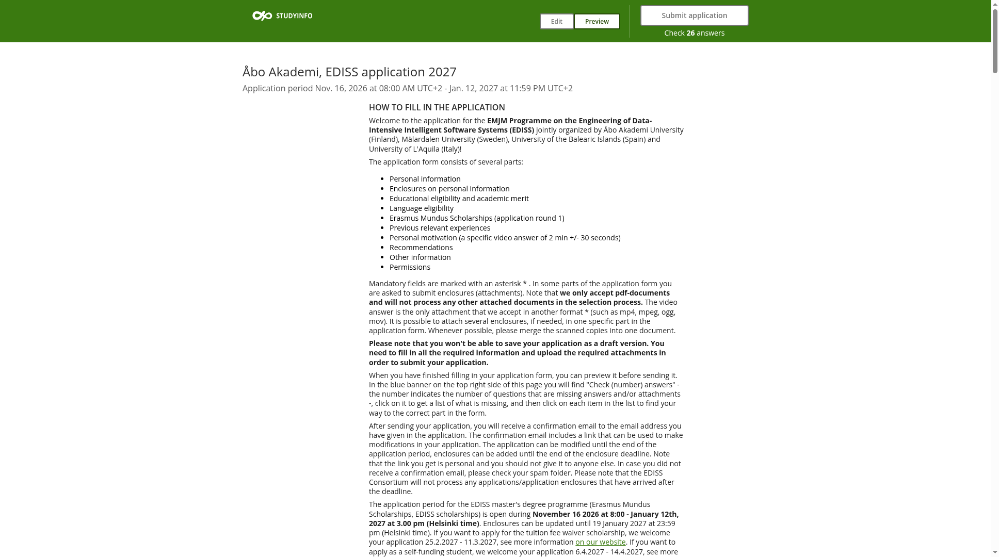

EDISS 2027: Erasmus Mundus masters scholarships
A two-year, 120-ECTS masters in Engineering of Data-intensive Intelligent Software Systems. Eligible Indian applicants, including those from Kerala, can compete for scholarships for the 2027–29 intake.
What and where will you study?
EDISS combines software engineering, data science and machine learning. The first year is at Åbo Akademi University in Finland. The second is at a partner in Sweden, Spain or Italy. Studyinfo describes it as a double-degree programme. It includes a mandatory internship between the two years. This is a degree-scholarship opportunity, not an AI tool offer.

What does the funding cover?
- Erasmus Mundus (EMJM) scholarship: waiver of participation costs, health insurance and €1,400 (approx ₹1.43 lakh) per month for 24 months. Participation costs are €9,000 (approx ₹9.17 lakh) per year. The published €51,600 (approx ₹52.59 lakh) total combines the fee waiver and monthly support; it is not all cash paid to a student.
- EDISS scholarship: a different award, with participation-cost waiver and health insurance, plus €800 (approx ₹81,533)/month in year one and €310 (approx ₹31,594)/month for up to 12 months in year two. Do not confuse it with the €1,400 (approx ₹1.43 lakh) EMJM award.
- Tuition-fee-waiver-only route: a separate application round, 25 February–11 March 2027. It is not the current stipend scholarship round.
The current page mentions second-year Erasmus+ mobility support for some awards but quotes 2024–25 amounts. Those old rates are not a verified 2027 promise and are not added to the funding above. Selection is competitive, not guaranteed.

Is the application free? What costs remain?
Studyinfo's current policy exempts Erasmus Mundus degree programmes from Finland's €100 (approx ₹10,192) application fee. This does not make every study expense free. EDISS lists travel to/from home, travel between consortium countries, possible internship/thesis travel, visa/residence permits, accommodation, living costs, books/computers and local compulsory charges outside the participation cost. Scholarship support contributes towards expenses; it is not a separate reimbursement guarantee for every item.
For reference only, the page gives a €69 (approx ₹7,032) student-union fee for 2026–27 and €35.35 (approx ₹3,603) healthcare fee per term. Future rates may change. English tests, document certification and translations can also cost money. Funding is quoted in euros, not a guaranteed rupee payout.
Who is eligible?
- A recognised bachelors or equivalent undergraduate degree of at least 180 ECTS in computer science, software engineering or an equivalent subject. The university decides equivalence; an Indian degree is not automatically mapped to ECTS.
- Knowledge of basic computer science, software engineering and applied mathematics. Relevant experience helps, but does not replace the academic requirements.
- All nationalities may apply. Previous EMJM/Erasmus Mundus Master Course/Joint Doctorate scholarship recipients cannot receive an additional Erasmus Mundus scholarship. EMJM holders cannot use another EU-funded scholarship for the same course period.
- Applicants awaiting graduation may be considered conditionally. Supply an institutional statement of expected graduation and missing courses. Final degree/transcript/translations must reach the programme by 30 July 2027, 15:00 Helsinki, which is 5:30pm IST.

English test rules
IELTS Academic: overall 6.5, no component below 6.0; IELTS Online is not accepted. TOEFL iBT: the detailed rules use 93 for tests before 21 January 2026, or 4.5 overall with no band below 4 for tests after that date. Home Edition is not accepted. The source's before/after wording does not settle a test taken on the transition date itself; ask the programme if that applies to you. Results must remain valid and verifiable at least 14 days after the application period ends.
An Indian English-medium degree by itself does not meet the listed country-based exemption. That exemption concerns English education completed on-site in Australia, Canada, New Zealand, UK, USA, Switzerland or an EU/EEA country, with evidence. Distance/offshore degrees are excluded. A separate exemption exists for current degree students of an EDISS partner university with the required B2-equivalent certificate; an interview may be used.
Prepare these documents
- Certified/legalised bachelors certificate and transcript, with authorised English translations where needed; include the grading scale and CGPA context. Final-year applicants need the institutional statement.
- Diploma supplement if available; language evidence or valid exemption certificate; colour passport copy.
- CV, with evidence for relevant professional, international and other experience you claim.
- Two signed academic recommendation letters, preferably on university letterhead. If a referee sends directly, follow the programme's email-subject instructions and earlier application-deadline requirement.
- A motivation video of 2 minutes, with a tolerance of 30 seconds, covering why EDISS, your scientific interests and how your background fits.
Documents should be colour PDF scans in English or with official English translations. The motivation video is the exception, with common video formats accepted. Follow the live form's file limits. Prepare everything before starting because the form says it cannot be saved as a draft.
How to apply
- Read the current call, scholarship types and detailed admission criteria. Check degree fit and English evidence first.
- Use the call's Studyinfo link. On the 2027 programme page, choose Erasmus Mundus Scholarship and EDISS Scholarship application 2027, not the later fee-waiver or self-funded option.
- Open Fill in application form. The live form title is Åbo Akademi, EDISS application 2027. It was accessible without login during this check.
- Complete personal information, educational merit, language evidence, scholarship section, experience, motivation video, recommendations and declarations. The form changes some fields based on your answers; no personal data was entered during this review.
- Review every answer and attachment using Preview and Check answers. Submit well before the earlier deadline target above. Enclosures can be updated until 19 January 2027, 23:59 Helsinki, which is 3:29am IST on 20 January. This is not an extension for starting/submitting the main application. Follow earlier specific document requirements where stated.
- Save the confirmation email and its private editing link. The form says it sends this after submission. Never share that link publicly. We did not submit an application or test the confirmation email.

Selection, help and source cautions
The published scoring is academic merit 70 points, relevant experience 15, personal motivation 10 and recommendations 5. Equal scores are ranked by academic merit. The Studyinfo 15-place figure is a study-place count, not 15 guaranteed EMJM scholarships.
Some programme pages retain old intake numbers or old 2026–28 wording despite current 2027 dates. The active 2027 Studyinfo form confirms the intake, but its closing-time metadata conflicts with its own written instructions. No account was created, no details entered and no application submitted. Eligibility decisions, uploads, payment behaviour and final confirmation were not tested.
The programme office lists a live Q&A webinar on 16 December 2026, 14:00–15:00 Finnish time, on its official webinar page. Use that page for the registration link and latest arrangements. No reliable current full-form walkthrough in both English and Malayalam was verified. The written official instructions and programme office are the safer application references.